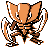
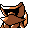

#141
Kabutops
RockWater
Its sleek shape is perfect for swim- ming. It slashes prey with its claws and drains the body fluids
Base stats Total 440
HP60
Attack115
Defense105
Speed80
Special80
Details
- Species
- Shellfish
- Height
- 4'03"
- Weight
- 89.0 lb
- Catch rate
- 45
- Base exp
- 201
- Growth
- Medium Fast
Level-up moves
LevelMoveType
StartScratchNormal
StartHardenNormal
StartAbsorbGrass
Lv 11LeerNormal
Lv 21Rock ThrowRock
Lv 25SlashNormal
Lv 30Rock SlideRock
Lv 35WaterfallWater
Lv 40Mega DrainGrass
Lv 46Hydro PumpWater
Lv 50X ScissorBug
Lv 54Stone EdgeRock
Evolution
Evolves from Kabuto
Where to find
Not found in the wild — evolve, trade or catch it elsewhere.
TM / HM
TM02 Razor WindTM03 Swords DanceTM05 Mega KickTM06 ToxicTM08 Body SlamTM09 Take DownTM10 Double-EdgeTM11 BubblebeamTM12 Water GunTM13 Ice BeamTM14 BlizzardTM15 Hyper BeamTM17 SubmissionTM19 Seismic TossTM21 Mega DrainTM28 DigTM31 MimicTM32 Double TeamTM33 ReflectTM34 BideTM44 RestTM48 Rock SlideTM50 SubstituteHM01 CutHM03 Surf